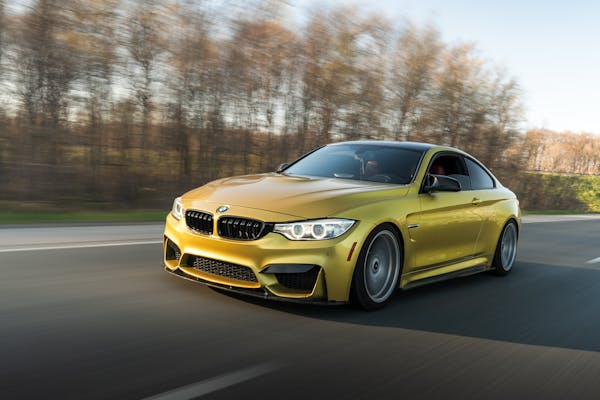

BMW M4 Competition
A BMW M4 Competition representa o ápice da engenharia esportiva alemã, unindo força, precisão e elegância. Seu motor 3.0 litros TwinPower Turbo entrega impressionantes 510 cavalos de potência, permitindo que o carro acelere de 0 a 100 km/h em apenas 3,9 segundos.
O design da M4 é agressivo e sofisticado. A grade dianteira em estilo duplo rim se tornou icônica e controversa, mas simboliza ousadia. As linhas da carroceria foram esculpidas para oferecer aerodinâmica, enquanto o interior combina tecnologia e conforto premium, com bancos esportivos em couro Merino e detalhes em fibra de carbono.
A dirigibilidade é outro destaque. A tração integral M xDrive ajusta-se dinamicamente, oferecendo controle total mesmo nas curvas mais agressivas. A suspensão adaptativa e os freios M compostos garantem estabilidade em altas velocidades.
A BMW M4 Competition é mais que um carro: é uma experiência para quem ama performance sem abrir mão da sofisticação.
Galeria de Imagens